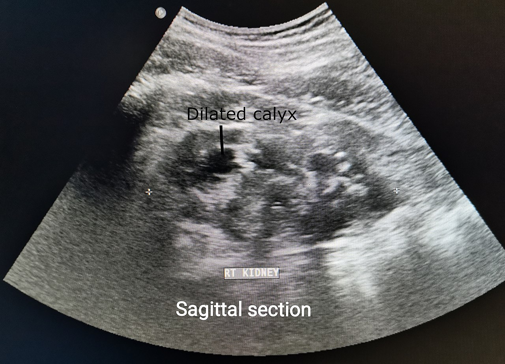

Ficha del catálogo
Hidronefrosis
- Sistema
- Urinario
- Modalidad
- US
- Región
- Riñones
- Dificultad
- Básico
Dilatación del sistema colector renal por obstrucción al flujo de orina, causada con mayor frecuencia por litiasis, aunque también por tumores, estenosis o compresión externa. El ultrasonido la detecta con facilidad y sin radiación.
Técnica
Transductor convexo, explorando ambos riñones en cortes longitudinales y transversales, por vía subcostal e intercostal, con el paciente en decúbito supino y en decúbito lateral.
Qué observar
- Dilatación anecoica (negra) del sistema colector en el seno renal
- Graduación: Leve cuando solo se dilata la pelvis, moderada cuando se incluyen los cálices, y grave cuando además hay adelgazamiento del parénquima
- Grosor del parénquima renal, cuyo adelgazamiento indica obstrucción de larga evolución
- Uréter dilatado, que si se identifica ayuda a localizar el nivel de la obstrucción
- Cálculo obstructivo: Foco ecogénico con sombra acústica en el riñón o en la unión ureterovesical
- Vejiga: Su repleción excesiva puede causar dilatación bilateral que se resuelve tras el vaciamiento
Hallazgos
Dilatación del sistema pielocalicial renal con separación de los ecos del seno, compatible con hidronefrosis.
Perlas
Antes de diagnosticar hidronefrosis conviene comprobar la vejiga: Si está muy llena, la dilatación puede ser simplemente funcional. Repetir el estudio tras la micción evita diagnósticos falsos, y es un paso que se olvida con frecuencia.
Diagnóstico diferencial
- Quistes parapiélicos
- Son estructuras anecoicas redondeadas en el seno renal que no se comunican entre sí ni con la pelvis, algo que el Doppler y los cortes en distintos planos permiten comprobar.
- Vasos del seno renal prominentes
- Aparecen como imágenes tubulares anecoicas que muestran señal de flujo con Doppler color, a diferencia del sistema colector dilatado, que no la tiene.
- Dilatación fisiológica por vejiga llena
- Es leve y bilateral y se resuelve o disminuye de forma clara tras la micción, por lo que siempre debe repetirse el estudio con la vejiga vacía.
- Dilatación del embarazo
- Es más marcada en el lado derecho, aparece en la segunda mitad de la gestación por compresión y por efecto hormonal, y no se acompaña de dolor obstructivo agudo.
- Pielonefritis con dilatación
- Se acompaña de aumento del tamaño renal, alteración de la ecogenicidad, contenido ecogénico en el sistema colector y clínica infecciosa.
- Megauréter o reflujo vesicoureteral
- La dilatación afecta también al uréter en todo su trayecto y suele ser un hallazgo crónico y conocido, con frecuencia en pacientes pediátricos.
Simuladores
- Una ganancia excesiva o una ventana inadecuada pueden hacer parecer dilatado un seno renal normal (conviene explorar en varios planos antes de concluir).
- Los quistes parapiélicos son la trampa clásica, ya que reproducen el aspecto de una pelvis dilatada, pero no confluyen hacia el uréter.
- En pacientes con derivación urinaria o con sonda vesical la dilatación puede persistir sin obstrucción activa.
- Una obstrucción muy reciente o en un paciente deshidratado puede cursar sin dilatación apreciable, lo que da un falso resultado negativo.
Por modalidad
- US
- Técnica de primera línea: Detecta y gradúa la dilatación sin radiación, valora el grosor del parénquima y es repetible en el seguimiento.
- TC
- La tomografía sin contraste es la referencia para identificar litiasis y determinar el nivel de la obstrucción, y con contraste valora la función y la causa.
- RM
- Alternativa sin radiación en embarazadas y en niños, con excelente valoración de la vía urinaria mediante secuencias muy potenciadas en T2.
- RX
- La radiografía simple puede mostrar litiasis cálcicas y sirve como referencia en el seguimiento de cálculos ya conocidos.
Protocolo
Se explora con transductor convexo de baja frecuencia y el paciente en decúbito supino y en decúbito lateral, con accesos subcostal e intercostal y usando el hígado y el bazo como ventana acústica. Se recorren ambos riñones en planos longitudinal y transversal, midiendo su longitud y el grosor del parénquima, y se valora el sistema colector con la ganancia adecuada. Se aplica Doppler color para diferenciar vasos de cálices dilatados y se explora la vejiga en repleción para buscar cálculos en la unión ureterovesical y comprobar la presencia de los chorros ureterales. Si existe dilatación bilateral con vejiga muy llena, se repite el estudio tras la micción.
Clasificación
La graduación más difundida en el adulto distingue hidronefrosis leve, con dilatación limitada a la pelvis renal; moderada, cuando también se dilatan los cálices manteniendo el parénquima conservado; y grave, cuando los cálices están marcadamente dilatados, se pierde la arquitectura del seno y el parénquima aparece adelgazado. En pediatría y en el diagnóstico prenatal se emplea el sistema de la Sociedad de Urología Fetal, que gradúa de cero a cuatro según la separación de los ecos del seno, la dilatación calicial y el estado del parénquima, así como clasificaciones basadas en el diámetro anteroposterior de la pelvis renal.
Errores frecuentes
- Diagnosticar hidronefrosis sin comprobar el estado de repleción de la vejiga ni repetir el estudio tras la micción.
- Confundir quistes parapiélicos o vasos del seno con dilatación del sistema colector por no emplear Doppler.
- Descartar obstrucción por ausencia de dilatación en un cuadro agudo muy reciente.
- No buscar la causa ni el nivel de la obstrucción, quedándose en la simple descripción de la dilatación.

hidronefrosis riñon obstruccion litiasis ultrasonido urinario pelvis renal